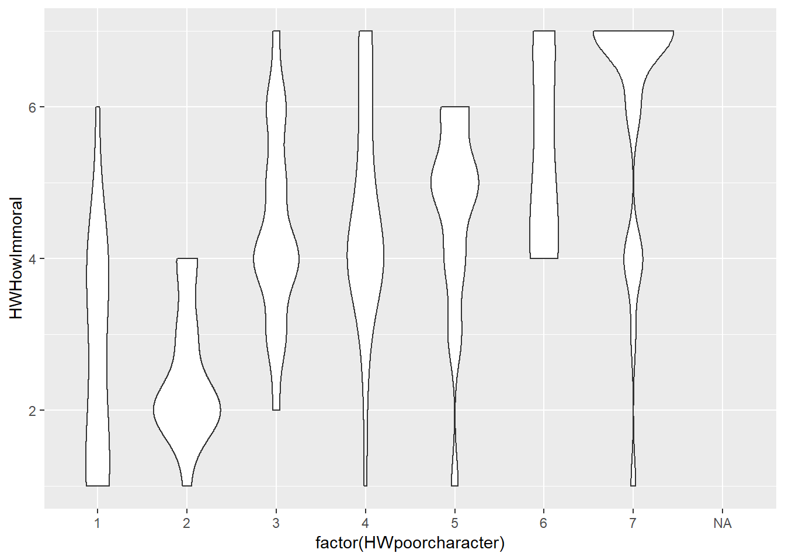

We can use this space to go ahead and write out any exercise or prework that you would like have done prior to coming.
This plot is generated using ggplot2 (Wickham 2016).
library(ggplot2)
ggplot(iris, aes(Species, Sepal.Length))+
geom_col()Here I describe the follow-up work I did for Session 3 wherein I imported a data set using rio(), practiced creating visualisations of that data set with ggplot(), documented those efforts using R Markdown, and published that documentation to my Github website.
First, I loaded the tidyverse and rio packages for managing and importing data into R.
library(tidyverse)
library(rio)Then I imported my data set. In this data set, I explore belief in harmless wrongs (i.e. the belief that certain behaviors are immoral even if they do not harm) in a sample of users of the website Amazon Mechanical Turk. I tested what proportion of people believe in harmless wrongs or, alternatively, believe that behaviors are only wrong insofar as they cause harm. I also askedpeople who belive in harmless wrongs to provide an example of a harmless wrong, and I measured various perceptions of those harmless wrongs (immoral participants thought those behvaiors were, how indicative those behaviors were of poor moral character, etc.)
HarmlessWrongs <- import("Study175bDatasav.sav")After importing the dataset, I checked the data set using the head() function.
head(HarmlessWrongs, 10)I am interested in why people consider harmless wrongs to be immoral. If these behaviors cause no harm, then what is unethical about them?
In my data set, I asked people who believe in harmless wrongs to supply an example of a harmless wrong. I also asked these people to indicate precisely how immoral they considered that behavior to be (1 = not at all; 7 = very), and I asked people to rate the behavior on several other dimensions. One of those dimensions was the degree to which participants view the behavior as indicative of poor moral character (1 = not at all; 7 = very much so).
I am interested whether harmless wrongs are perceived as wrong because they are indicative of poor moral character. Therefore, I created a scatterplot of the relationship between perceptions of harmless wrongs as indicating poor moral character (on the X axis) and perceptions of harmless wrongs as immoral (on the Y axis). I used ggplot’s geom_point() geometry.
ggplot (HarmlessWrongs, aes(x = HWpoorcharacter, y = HWHowImmoral)) + geom_point()One limitation of the above visualization is that it does not depict the large numbers of participants with identical responses. Therefore, I created a second visualization using as my geometric object geom_count().
ggplot (HarmlessWrongs, aes(x = HWpoorcharacter, y = HWHowImmoral)) + geom_count()I also created a box plot visualization.
ggplot (HarmlessWrongs, aes(x = factor(HWpoorcharacter), y = HWHowImmoral)) + geom_boxplot()And I created a violin plot visualization.
ggplot (HarmlessWrongs, aes(x = factor(HWpoorcharacter), y = HWHowImmoral)) + geom_violin()
For my follow-up work to Session 4, I worked on the code for importing data directly from Qualtrics using the qualtRics package. I will be collecting data in Qualtrics over multiple time points and thus would like automate the process of downloading and analyzing those data as they come in.
First, I installed and loaded the qualtRics package.
install.packages("devtools", repos = "http://cran.us.r-project.org")## package 'devtools' successfully unpacked and MD5 sums checked
##
## The downloaded binary packages are in
## C:\Users\masicaej\AppData\Local\Temp\RtmpQZs0Xd\downloaded_packagesdevtools::install_github("ropensci/qualtRics")library(qualtRics)Then I registered my Qualtrics credentials. (I assigned my Qualtrics API token as the value of QualtricsAPIToken within .rprofile to keep it hidden here.) I also told R not to use the labels but rather to use values for survey responses.
registerOptions(api_token = QualtricsAPIToken, base_url="wakeforest.ca1.qualtrics.com")
registerOptions(useLabels = FALSE)I think imported the Harmless Wrongs data set directly from Qualtrics using the getSurvey() function.
HarmlessWrongsfromQualtrics <- getSurvey(surveyID = "SV_8IbGxs0unkqqERv", includeQuestionIds = c("HWHowImmoral", "HWpoorcharacter"))##
|
| | 0%
|
|=================================================================| 100%I then checked the data set using the head() function.
head(HarmlessWrongsfromQualtrics, 10)I am now able to retrieve data directly from Qualtrics, which will be useful for my SOTL project this semester. I will be asking my students to complete Qualtrics surveys every other week for the entire semester. I hope to write some R code that will download, analyze, and create a report from those data and that I can (re)run at any point in the semester.
Wickham, Hadley. 2016. Ggplot2: Elegant Graphics for Data Analysis. Springer-Verlag New York. http://ggplot2.org.
Copyright © 2018 E.J. Masicampo. All rights reserved.